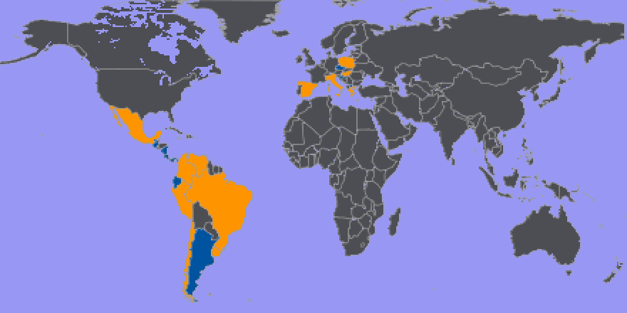
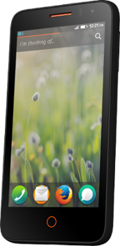
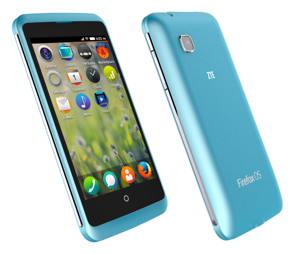
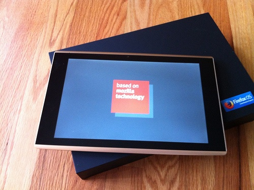
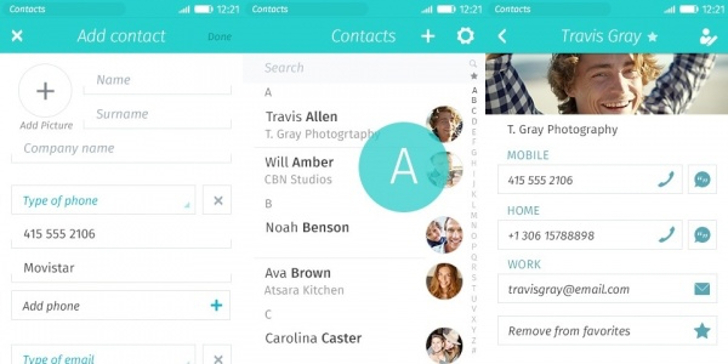
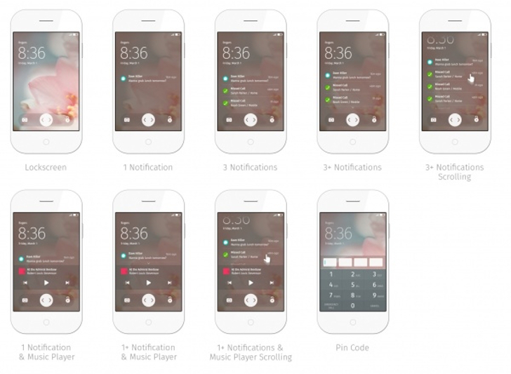
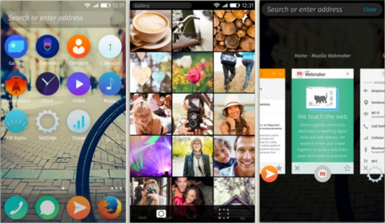
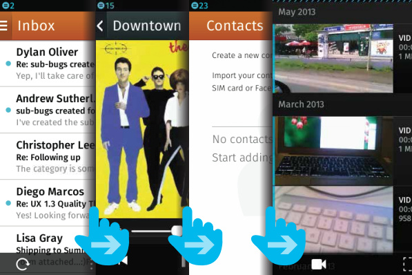

Firefox OS
from a consumer's point of view
Kálmán Szalai @KAMI911KAMI &
István Szmozsánszky @slsoftworks
Budapest, 29/05/2014
Firefox OS - The Open Web smartphone
Firefox OS - The Open Web smartphone
Free and Open Source
- Firefox OS itself
- Marketplace
- Non-profit development background
Free for all?
- Everybody can publish webapps
- In-app payment, App purchase
What we did in 2013?
What we did in 2013?
- Introduced a brand new mobile platform powered by the Web.
- Released the 1.0 - 1.2 versions.
- Started the Marketplace.
- Every launch countries have fully L10n release.
- Reached our goals for 2013.
Launch countries: 2013-2014
Launch countries: 2013-2014

What's coming in 2014?
What's coming in 2014
- New devices, full-blown ecosystem across all form factors.
- New OS features, 2.0 is Firefox OS re-imagined.
- New launch countries, Firefox OS's reach spans the whole globe.
- State of the art gaming capabilities crammed into a HTML5 mobile device!
The web everywhere
All-new hardware across a plethora of new form-factors
Low end like never before

Spreadtrum $25 Firefox OS phone
- 25$ phones primarily for emerging markets (i.e.: India)
- Limited hardware, but full smartphone & web experience
Mid-tier devices
-

Firefox OS Flame
-

ZTE Open C
-

Alcatel OT Fire E
A sneak peek into high-end
Alcatel One Touch Fire S
- Quad core, NFC & high resolution screen
- sleek design & materials
- ~$270, coming Q3, 2014
Firefox OS on the Tablet form factor

- Community effort - TCP
- inFocus F1 10" (first) & Via VIXEN 7" (soon)
- Also coming up: the Alcatel One Touch Fire 7
- Low-cost devices for big-screen web experience
Wearable web?
- Samsung looking into putting JS-based OS-es on its wearable products
- No plans right now, but active discussion with standards bodies (ECMAScript/TC39)
Firefox OS 2.0
What does the fox wear?
Complete visual overhaul

- A new, cleaner visual language
- Sleeker UI and new iconset
- Redesigned built-in apps
New & customizable lockscreen
Replaceable & customizable homescreen

Flow UI with swipe gestures
Integrated user experience with web philosophy
- No more "browser" - the whole phone is a browser
- No more "tabs" - each browser tab is its own app (card)
- Easy task switching via the flow UI gestures
- Search & url bar integrated ("Rocketbar")
Firefox OS Gaming
ASM.js & WebGL support for competitive gaming experience on the web platform
Smooth graphics on low-end hardware:
Cut the Rope
Hardware access via Open Web APIs:
Sketchbook Squad